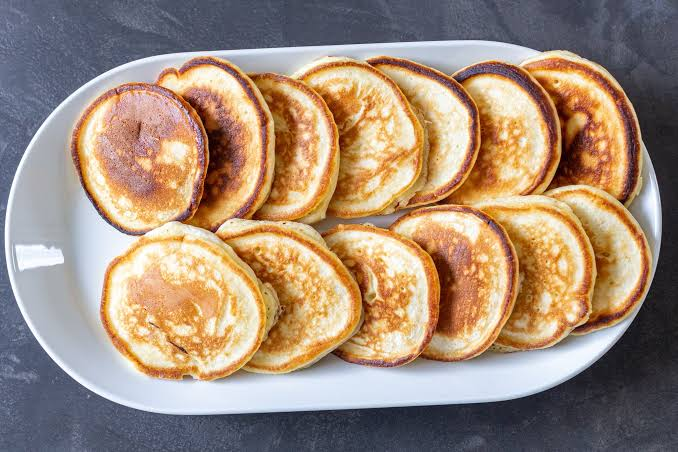

Milk Pancakes

Simple, thin and tender, closer to American pancakes than to the fluffy kefir version.
Ingredients:
- 200 ml milk;
- 1-2 eggs (depending on size);
- 180-200 g all-purpose flour;
- 1 tsp baking powder;
- 2 tbsp sugar (or to taste);
- 1 pinch salt;
- 2-3 tbsp vegetable oil, for frying;
Instructions:
- Beat the eggs. Whisk the eggs with the sugar and salt for a couple of minutes.
- Add the milk. Pour in the milk and mix well.
- Add the dry ingredients. Stir the baking powder into the flour, then add it to the egg and milk mixture.
- Mix the batter. Stir until smooth. The batter should be thicker than crepe batter.
- Heat the oil. Warm the vegetable oil in a skillet over medium heat until hot.
- Fry. Spoon the batter into the pan with a tablespoon. Cook until golden, about 3 minutes per side, adding more oil if needed. If your pan is large enough, cook several at a time.
- Serve. Serve warm with sour cream or jam.
Done! Your pancakes are ready to eat! Enjoy!
If you’re interested in recipes for other simple and delicious baked goods from Slavic cuisine, be sure to check out our homepage!